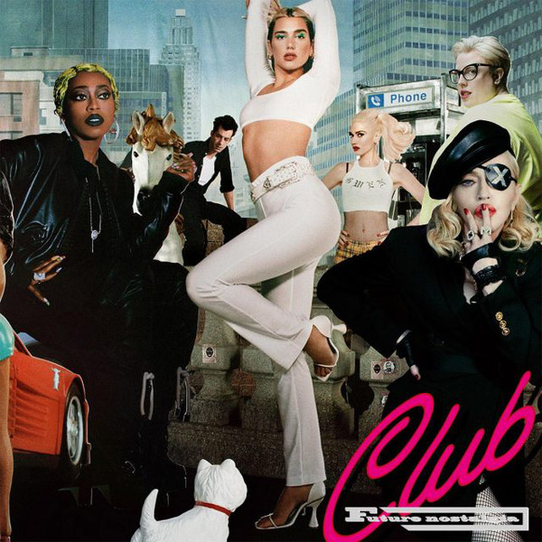
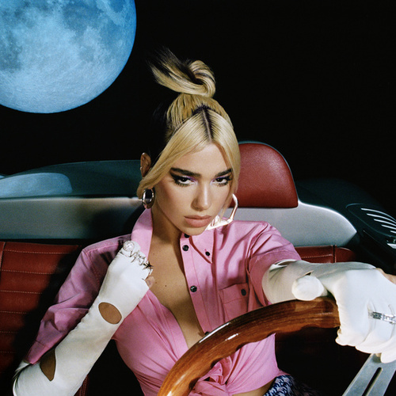
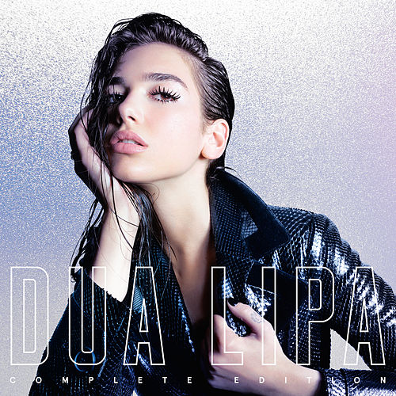

Dua lipa
es una cantante y compositora británica. Nació en Londres, Inglaterra, el 22 de agosto de 1995. En 2016 logró, con su sencillo ”Be The One”, internacionalizar su carrera musical tras ingresar en las veinte principales canciones de las listas de éxitos en varios países europeos.
Dua Lipa se caracteriza por ser una intérprete de pop. También ha realizado fusiones con géneros como synth-pop, dance-pop, dream-pop y R&B, entre otros.
Trayectoria y Legado de Dua Lipa
A finales de agosto de 2015 Dua Lipa estrenó su primer sencillo, “New Love”, que no alcanzó mayor popularidad. Luego, en octubre, publicó “Be the One”, la receptividad fue mucho mayor y la pieza se situó entre los veinte primeros puestos en los listados de Alemania, Bélgica, Nueva Zelanda, Suecia y España; en Australia fue número uno, con ventas altas y la certificación de platino de la Australian Recording Industry Association (ARIA).
El resultado de las ventas en Alemania fue muy favorable, consiguió el premio de oro por el organismo certificador. El tema también gozó del favor de la crítica especializada, como la que hizo el comentarista Paul Lester, del periódico The Guardian, quien escribió que es una canción "fabulosa" de una artista con una "...voz humeante, evocadora de una más joven, más pop Lana [Del Rey]"; cantante con la que a Dua se le comparaba frecuentemente en sus comienzos musicales. Por su parte, Lindsey Weber, de la revista The Fader, opinó de Dua Lipa que "…su voz es el recipiente perfecto para colaboradores como Haynie y Wyatt, que se extienden en la producción, dándole un eco etéreo". A finales de 2015 la cantante llamó la atención de la industria musical británica, al ser incluida en la lista de nominados al Sound of 2016 de la BBC.
A principios del año siguiente realizó, con gran éxito, una gira de siete conciertos por el Reino Unido. Luego marchó al extranjero para presentar sus temas por varios países europeos, además en abril debutó en salas de conciertos de Estados Unidos. En esa ocasión contó con el apoyo de la cadena de televisión estadounidense MTV, en las actividades de promoción, al aparecer en varios comerciales y hacer publicidad en línea como artista MVT Push, aquellos artistas noveles que empiezan a tener mucho éxito en muy poco tiempo. En mayo del mismo año Dua Lipa estrenó “Hotter Than Hell”, inspirado en una ruptura amorosa. El tema logró la posición quince en la lista de sencillos más vendidos y se convirtió en el primer éxito de la cantante en el Reino Unido, donde figuró como una de las canciones más populares del verano de ese 2016. En efecto, el sencillo sobrepasó las doscientas mil copias vendidas en territorio británico y recibió la certificación de plata de la British Phonographic Industry (BPI). La canción también gustó en varias regiones europeas y en algunos países de Oceanía, como Australia, donde fue especialmente popular; allí se colocó entre las veinte primeras en el listado de ventas de sencillos y rebasó las treinta mil copias vendidas en una semana, por lo que recibió certificación oro de la ARIA.
Dua Lipa editó en 2017, con gran éxito y reconocimiento, la canción "New Rules" que, efectivamente, se ubicó en los mejores puestos de la música del momento, a nivel internacional. Al mismo tiempo colaboró en el sencillo "Scared to Be Lonely" de Martin Garrix. Además, fue telonera en las actuaciones de Bruno Mars en su gira de conciertos 24K Magic World Tour, por varias ciudades estadounidenses. Al año siguiente Dua Lipa fue la encargada de amenizar la ceremonia de apertura de la final de fútbol de la Champions League. También pasó a promocionar la marca de ropa británica Pepe Jeans y el perfume "Libre" de Yves Saint Laurent, para el que compuso de manera exclusiva la canción "Free". "Don't Start Now", editada el 1° de noviembre de 2019 como primer sencillo de su próximo álbum de estudio, "Future Nostalgia", es una canción que parece una exaltación al desamor, desde la mirada de una joven de 24 años. La crítica especializada menciona las fortalezas de la cantante después de una ruptura.
| DISCOGRAFÍA | FECHA DE PUBLICACIÓN | CANCIONES |
|---|---|---|
|  | Octubre del 2020 |
|
|  | Marzo del 2019 |
|
|  | Junio del 2017 |
|